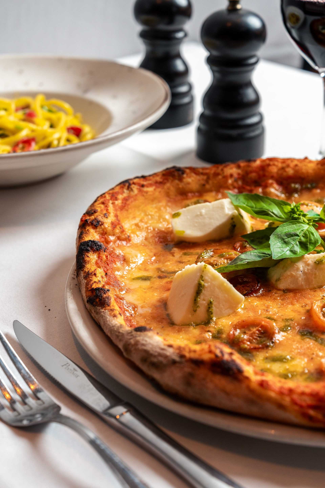
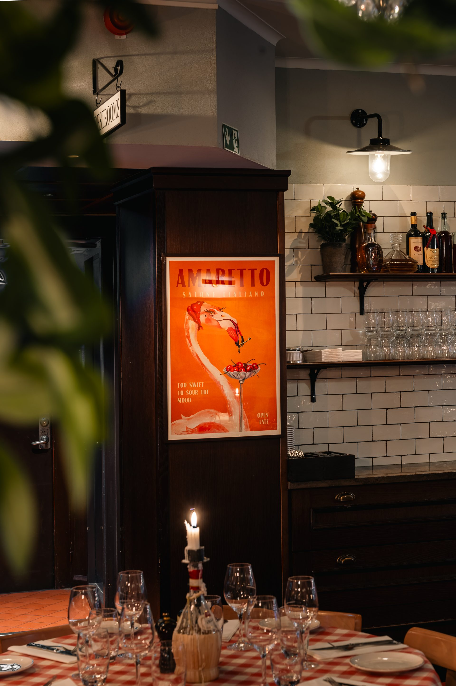
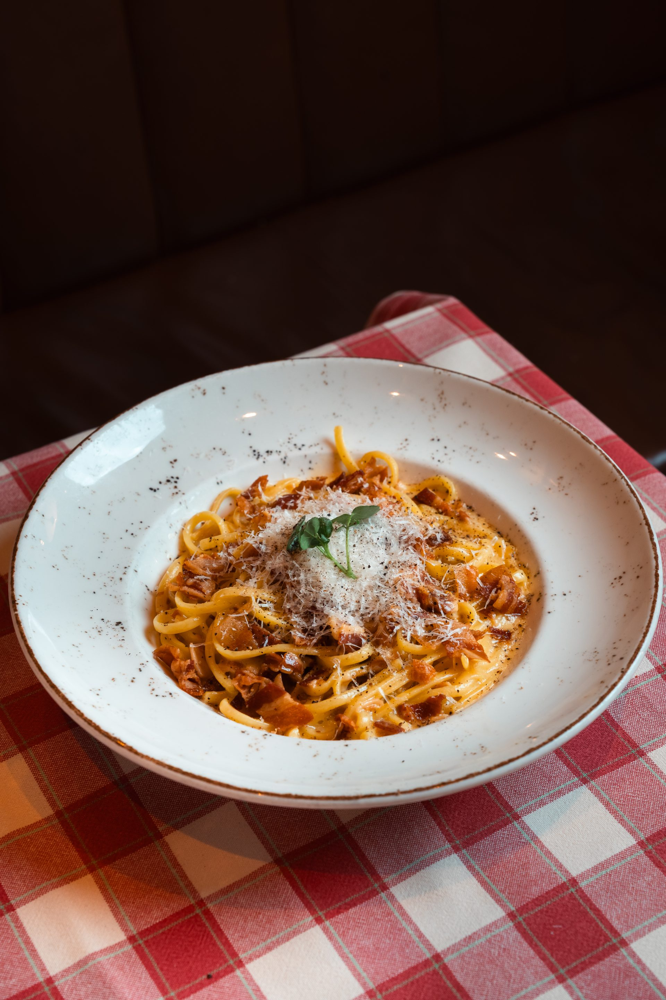

I hjärtat av Gamla Stan sedan 1999.
Restaurang Agaton — en kärleksfull mix av det svenska och italienska köket, i en varm och ombonad miljö med förstklassig service. I ett hus som nämndes för ett halvt årtusende sedan, på Västerlånggatan 72 sedan 1999.

Mitt på Västerlånggatan, i ett hus som stått här i ett halvt årtusende, har Agaton serverat ärlig italiensk mat sedan 1999. Före det var det en modebutik — och innan dess mycket annat. Vi har bara tagit vid.
Tänk flaxande ljus mot kullersten, en skiva nybakat bröd med olivolja, och en värd som hellre säger "kom igen" än "har ni bokat?".
I över 25 år har det godaste från Sverige omfamnat det godaste från Italien på den här adressen.
En vandring genom Gamla Stan bjuder på många historier. Så har vårt hus bytt skepnad genom århundradena.
Det första omnämnandet av huset — en gammal, förfallen stenhusbod på platsen.
Köpte huset och lät rusta upp det ordentligt.
Huset köptes av Elisabeth Funck — i köpet ingick "stora mellan fruns hus och breda gränden vid Kornhamn".
Lät sätta in tidens nymodighet — gjutjärnsburna skyltfönster i gatuplanet.
I bottenvåningen öppnade en elegant herrekipering vid namn Agaton.
Efter 18 år som herrekipering bytte lokalen kostym — till restaurang, med samma namn. Vår historia tar vid.
Fortfarande vedugnspizza, fortfarande handgjord pasta — fortfarande det godaste från Sverige som omfamnar det godaste från Italien.




Vi kompromissar aldrig med råvarornas ursprung. Mjölet från Neapel, olivoljan från Puglia och vinet från producenter vi träffar personligen.
Varje gäst är välkommen som om det vore första gången — och vi hoppas ni kommer tillbaka som om det vore hemma.
Pastan rullas för hand varje morgon. Pizzadegen vilar i 48 timmar. Det tar tid att göra saker rätt — det är exakt den tid vi lägger ner.
Västerlånggatan 72 — mitt i Gamla Stan. Vi ser fram emot att få laga något gott till dig.